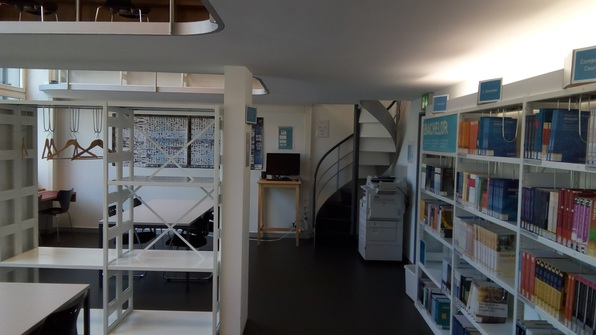
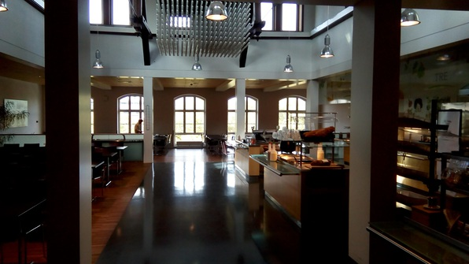

It’s orientation day at the ETH and the Hörsaal is crackling with energy! We sit through a history presentation, have a coffee break, safety presentation, another coffee break (hang with Daniel et al.) then off to tour the computer science building!
Turns out said building is only 5 minutes from Culmann (what a lucky goofball I am!) And it has a beautiful library :3


Also a mensa and a student den with fussball:

Accidentally attend the orientation for legit Master’s students and not the one for exchange students, but catch back up with Alex and my new theory buddies John (from the Czech Rep.) and Kalina (from Princeton). We get some lunch at the mensa, go back to CS building for another presentation, and then go to a CS welcome barbeque! The line is long but the beer is free, a good time! Learn a bit of graph theory while I’m at it–the “connectivity threshold”.